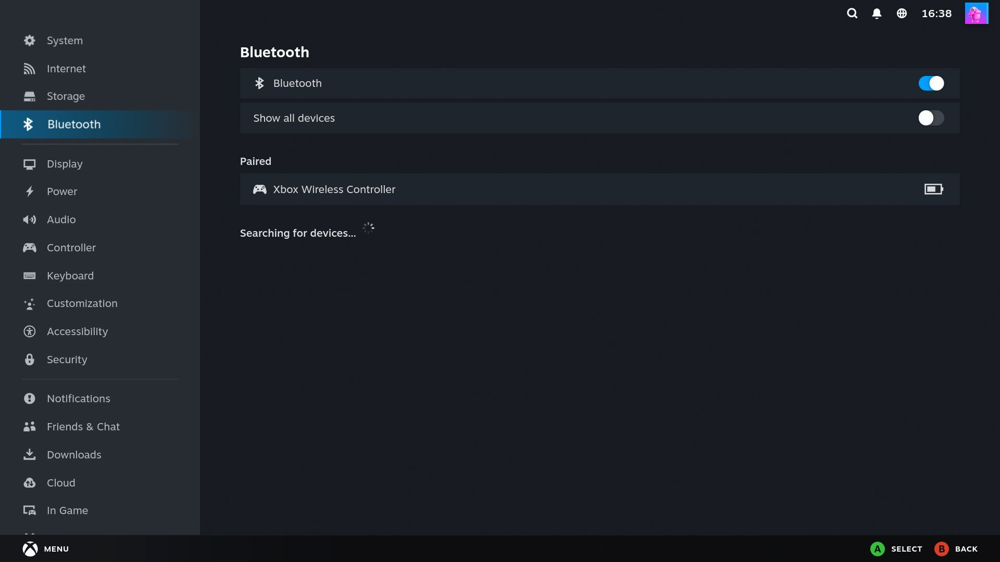

Pair a controller, headphones, or a Home Assistant sensor inside a VM - even with a Bluetooth chip that "can't be passed through."

On the Proxmox host:
curl -fsSL https://raw.githubusercontent.com/lucid-fabrics/proxmox-bluetooth/main/install.sh | sudo bashIt prints one line - paste that inside your VM. Done.
Nearly all Bluetooth adapters clear their firmware when they're re-enumerated on USB, so
after a passthrough the guest has to load it again. That works when the guest has the
matching driver and firmware blobs, which is why a full Debian or Arch VM often passes
through fine. It fails when the guest can't: Home Assistant OS and gaming distros ship
trimmed kernels and incomplete linux-firmware, and Intel CNVi combo chips
(BE200, AX2xx) are especially unforgiving. Try plain USB passthrough first -
if your guest is only missing a firmware package, install it and you don't need this tool.
No. The bridge forwards HCI over a local TCP connection, which on a LAN is far below Bluetooth's own radio latency. In practice controllers feel the same as on bare metal.
Yes. The bridge is protocol-transparent - it forwards raw Bluetooth traffic without understanding or filtering it. Anything that works on a normal Linux Bluetooth adapter works: controllers, audio, HID, and BLE sensors for Home Assistant.
No. The Bluetooth chip you already have works - even the one you might have already replaced trying to fix this.
Yes. Those distros replace the system image on update but keep /etc and
/var, which is exactly where this installs. The bridge and your pairings
come back on their own.
Know the trade-off. The bridge speaks plain, unauthenticated TCP on port 9700, so by
default whichever machine on your LAN connects first gets the Bluetooth chip,
with raw HCI access to the radio. Lock it to your VM with
./install.sh --allow 192.168.1.50, which installs an nftables rule accepting
that address and dropping everything else. There is no encryption either, so treat it as a
trusted-LAN tool between a host and its own VM, not something to route across networks you
don't control.
No - any Linux host running KVM VMs works, or even two separate physical machines. Proxmox is just where this problem is reported the most.
Full FAQ, compatibility table, and install script: see the README.